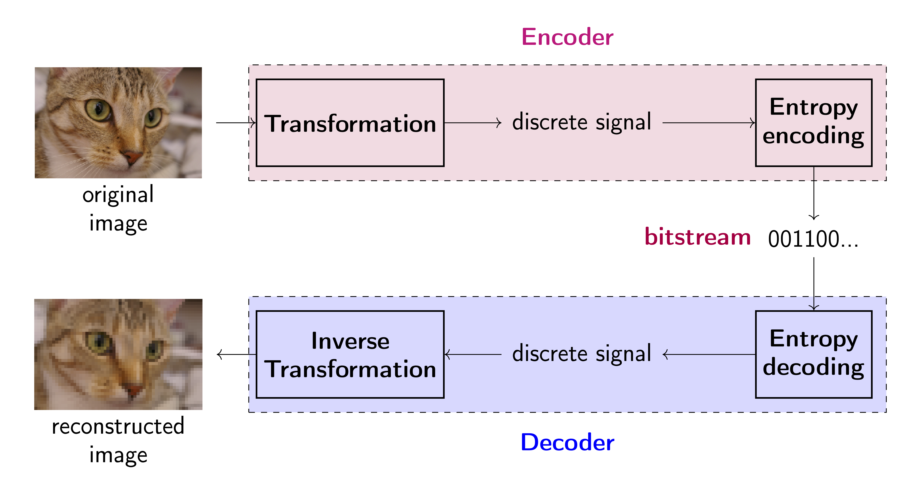

In December 2020, Facebook reported having around 1.8 billion daily active users and around 2.8 billion monthly active users (Facebook, 2020). Assuming that users uploaded, on average, a single photo each day, the resulting volume of data would give a very rough (let me stress it: a very rough) estimate of around 3TB of new images per day. This single case of Facebook alone already shows us potential great costs associated with storing and transmitting data. In the digital era we can simply say this: efficient and effective manner of handling data (i.e., faster and smaller) means more money in the pocket.
The most straightforward way of dealing with these issues (i.e., smaller and faster) is based on applying compression, and, in particular, image compression algorithms (codecs) that allow us to decrease the size of an image. Instead of changing infrastructure, we can efficiently and effectively store and transmit images by making them simply smaller! Let's be honest, the more we compress an image, the more and faster we can send and the less disk memory we need!
If we think of image compression, probably the first association is JPEG or PNG, standards used on the daily basis by everyone. I will not go into details of these standards (e.g., see (Ansari et al., 2009; Xiong and Ramchandran, 2009) for some intro) but what it is important to know is that they use some pre-defined math like Discrete Cosine Transform. The main advantage of the standard codecs like JPEG is that they are interpretable, i.e., all steps are hand-designed and their behavior could be predicted. However, this comes at the cost of insufficient flexibility that could drastically decrease their performance. So how we can increase the flexibility of transformations? Any idea? Anyone? Do I hear deep learning (LeCun et al., 2015; Schmidhuber, 2015)? Indeed! Many of today's image compression algorithms are enhanced by neural networks.
The emerging field of compression algorithms using neural networks is called neural compression. Neural compression becomes a leading trend in developing new codecs where neural networks replace parts of the standard codecs (Gueguen et al., 2018), or neural-based codecs are trained (Theis et al., 2017) together with quantization (Agustsson et al., 2017) and entropy coding (Balle et al., 2018; Habibian et al., 2019; Mentzer et al., 2018, Minnen et al., 2018). We will discuss the general compression scheme in detail in the next subsection but here it is important to understand why deep generative modeling is important in the context of neural compression. The answer was given a long time ago by Claude Shannon who showed in (Shannon, 1948) that (informally):
$$ \text{The length of a message representing some data is proportional to the entropy of this data.} $$
We do not know the entropy of data because we do not know the probability distribution of data, $p(\mathbf{x})$, but we can estimate it using one of the deep generative models we have discussed so far! Because of that, recently, there is an increasing interest in using deep generative modeling to improve neural compression. We can use deep generative models for modeling probability distribution for entropy coders (Balle et al., 2018; Habibian et al., 2019; Mentzer et al., 2018; Minnen et al., 2018), but also to significantly increase the final reconstruction and compression quality by incorporating new schemes for inference (Yibo Yang et al., 2020) and reconstruction (Mentzer et al., 2020).
Before we jump into neural compression, it is beneficial (and educational, don't be afraid of refreshing the basics!) to remind ourselves what is image (or data, in general) compression. We can distinguish two image compression approaches (Salomon, 2004), namely, (i) lossless compression (a method that preserves all information and reconstructions are error-free), and (ii) lossy compression (information is not preserved completely by a compression method). A general recipe for designing a compression algorithm relies on devising a uniquely decodable code whose expected length is as close as possible to the entropy of the data (Shannon, 1948). The general compression system consists of two components (Salomon, 2004; Karam, 2009): an encoder and a decoder. Please do not think of it as a deterministic VAE because it is not the same. There are some similarities but in the compression task, we are really interested in sending the bitstream while in VAEs we typically do not care at all. We play with floats and say about codes just to make it more intuitive but it requires a few extra steps to turn it into a "real" compression scheme. We are going to explain these extra in the next sections. Alright, let's start!
Encoder In the encoder, the goal is to transform an image into a discrete signal. It is important to understand that the signal does not necessarily need to be binary. The transformation we use could be invertible, however, it is not a requirement. If the transformation is invertible, then we can use its inverse in the decoder and, in principle, we can talk about lossless compression. Why? Take a look at the flow-based models where we discussed invertibility. However, if the transformation is not invertible, then some information is lost and we land in the group of lossy compression methods. Next, after applying the transformation to the input image, the discrete signal is encoded into a bitstream in a lossless manner. In other words, discrete symbols are mapped to binary variables (bits). Typically, entropy coders utilize information about the probability of symbol occurrence, e.g., Huffman coders or arithmetic coders (Salomon, 2004). This is important to understand that for many entropy coders we need to know $p(\mathbf{x})$ and here we can use deep generative models.
Decoder Once the message (i.e., the bits) is sent and received, the bitstream is decoded to the discrete signal by the entropy decoder. The entropy decoder is the inversion of the entropy encoder. Entropy coding methods allow us to receive the original symbols from the bitstream. Eventually, an inverse transformation (not necessarily the inversion of the encoder transformation) is applied to reconstruct the original image.
The full scheme Please see Figure 1 for a general scheme of a compression system (a codec). The standard codecs mainly utilize multi-scale image decomposition like wavelet representation (Moulin, 2009; Xiong and Ramchandran, 2009) that are further quantized. Considering a specific discrete transformation (e.g., Discrete Cosine Transform (DCT)) results in a specific codec (e.g., JPEG (Ansari et al., 2009)).

The objective The final performance of a codec is evaluated in terms of reconstruction error and compression ratio. The reconstruction error is called distortion measure and is calculated as a difference between the original image and the reconstructed image using the mean square error ($MSE$) (typically, the peak signal-to-noise ratio $PSNR$ expressed as $10\log_{10}\frac{255^{2}}{MSE}$ is reported) or perceptual metrics like the multi-scale structure similarity index ($MS\mbox{-}SSIM$) (Wang et al., 2003). The compression ration, called rate, is usually expressed by the bits per pixel (bpp), i.e., the total size in bits of the encoder output divided by the total size in pixels of the encoder input (Karam, 2009). Typically, the performance of codecs is compared by inspecting the rate-distortion plane (i.e., plotting curves on a plane with the rate on the x-axis and the distortion on the y-axis).
Formally, we assume an auto-ecoder architecture (see Figure 1 again) with an encoding transformation, $f_e: \mathcal{X} \rightarrow \mathcal{Y}$, that takes an input $\mathbf{x}$ and returns a discrete signal $\mathbf{y}$ (a code). After sending the message, a reconstruction $\hat{\mathbf{x}}$ is given by a decoder, $f_d: \mathcal{Y} \rightarrow \mathcal{X}$. Moreover, there is an (adaptive) entropy coding model that learns the distribution $p(\mathbf{y})$, and is further used to turn the discrete signal $\mathbf{y}$ into a bitstream by an entropy coder (e.g., Huffman coding, arithmetic coding). If a compression method has any adaptive (hyper)parameters, it could be learned by optimizing the following objective function:
\begin{equation}\label{eq:rate_distortion} \mathcal{L}(\mathbf{x}) = d\left(\mathbf{x}, \hat{\mathbf{x}}\right) + \beta r\left(\mathbf{y}\right) , \end{equation}where $d(\cdot, \cdot)$ is the distortion measure (e.g., PSNR, MS-SSIM), and $r(\cdot)$ is the rate measure (e.g., $r\left(\mathbf{y}\right) = - \ln p(\mathbf{y})$), $\beta > 0$ is a weighting factor controlling the balance between rate and distortion. Notice that distortion requires both the encoder and the decoder, and rate requires the encoder, and the entropy model.
We have discussed all necessary concepts of image compression and now we can delve into neural compression. However, before we do that, the first question we face is whether we can get any benefit from using neural networks for compression and where and how we can use them in this context. As mentioned already, standard codecs utilize a series of pre-defined transformations and mathematical operations. But how does it work?
Let us quickly discuss one of the most commonly used codecs: JPEG. In the JPEG codec, an RGB image is first linearly transformed to the YCbCr format:
$$ \begin{bmatrix} Y \\ Cb\\ Cr \end{bmatrix} = \begin{bmatrix} 0 \\ 128\\ 128 \end{bmatrix} + \begin{bmatrix} 0.299 & 0.587 & 0.114 \\ -0.168736 & -0.331264 & 0.5\\ 0.5 & -0.48688 & -0.081312 \end{bmatrix} \begin{bmatrix} R \\ G\\ B \end{bmatrix} $$Then, the Cb and Cr channels are downscaled, typically two or three times (the first compression stage). After that, each channel is split into, e.g., 8x8 blocks, and fed to the discrete cosine transform (DCT) that is eventually quantized (the second compression stage). After all, the Huffman coding could be used. To decode the signal, the inverse DCT is used, the Cb and Cr channels are upscaled and the RGB representation is recovered. The whole system is presented in Figure 2. As you can notice, each step is easy to follow and if you know how DCT works, the whole procedure is a white box. There are some hyperparameters but, again, they have a very clear interpretation (e.g., how many times the Cb and Cr channels are downscaled, the size of blocks).
Alright, we know now how a standard codec works. However, one of the problems with standard codecs is that they are not necessarily flexible. One may ask whether DCT is the optimal transformation for all images. The answer is, with high probability, no. If we are willing to give up the nicely designed white box, we can turn it into a black box by replacing all mathematical operations with neural networks. The potential gain is increased flexibility and potentially better performance (both in terms of distortion and rate).
We need to remember though that learning neural network requires the differentiability of the whole approach. However, we require a discrete output of the neural network that could break the backpropagation! For this purpose, we must formulate a differentiable quantization procedure. Additionally, to obtain a powerful model, we need an adaptive entropy coding model. This is an important component of the neural compression pipeline because it not only optimizes the compression ratio (i.e., the rate) but also helps to learn a useful codebook. Next, we will discuss both components in detail.
Encoders & decoders In neural compression, unlike in VAEs, the encoder and the decoder consist of neural networks with no additional functions. As a result, we focus on architectures rather than how to parameterize a distribution, for instance. The output of the encoder is a continuous code (floats) and the output of the decoder is a reconstruction of an image. Below we present PyTroch classes with examples of neural networks.
# The encoder is simply a neural network that takes an image and outputs a corresponding code.
class Encoder(nn.Module):
def __init__(self, encoder_net):
super(Encoder, self).__init__()
self.encoder = encoder_net
def encode(self, x):
h_e = self.encoder(x)
return h_e
def forward(self, x):
return self.encode(x)
# The decoder is simply a neural network that takes a quantized code and returns an image.
class Decoder(nn.Module):
def __init__(self, decoder_net):
super(Decoder, self).__init__()
self.decoder = decoder_net
def decode(self, z):
h_d = self.decoder(z)
return h_d
def forward(self, z, x=None):
x_rec = self.decode(z)
return x_rec
# ENCODER
encoder_net = nn.Sequential(nn.Linear(D, M*2), nn.BatchNorm1d(M*2), nn.ReLU(),
nn.Linear(M*2, M), nn.BatchNorm1d(M), nn.ReLU(),
nn.Linear(M, M//2), nn.BatchNorm1d(M//2), nn.ReLU(),
nn.Linear(M//2, C))
encoder = Encoder(encoder_net=encoder_net)
# DECODER
decoder_net = nn.Sequential(nn.Linear(C, M//2), nn.BatchNorm1d(M//2), nn.ReLU(),
nn.Linear(M//2, M), nn.BatchNorm1d(M), nn.ReLU(),
nn.Linear(M, M*2), nn.BatchNorm1d(M*2), nn.ReLU(),
nn.Linear(M*2, D))
decoder = Decoder(decoder_net=decoder_net)
Differentiable quantization The problem with utilizing neural networks in the compression context is that we must ensure training by backpropagation that is equivalent to using only differentiable operations. Unfortunately, working with discrete outputs of a neural network breaks differentiability and requires applying approximations of gradients (e.g., the Straight-Through Estimator). However, we can use quantization of codes $\mathbf{y}$ and make it differentiable with relatively simple tricks.
We assume that the encoder gives us a code $\mathbf{y} \in \mathbb{R}^{M}$. Moreover, we assume that there is a codebook $\mathbf{c} \in \mathbb{R}^{K}$. We can think of the codebook as a vector of additional parameters (yes, parameters, we can also learn it!). Now, the whole idea relies on quantizing $\mathbf{y}$ to values in the codebook $\mathbf{c}$. Easy right? Well, it is easy but it still tells us nothing. Quantizing in this context means that we will take every element in $\mathbf{y}$ and find the closest value in the codebook and replace it with this codebook value. We can implement it using matrix calculus in the following manner. First, we repeat $\mathbf{y}$ $K$-times and we repeat $\mathbf{c}$ $M$-times that gives us two matrices: $\mathbf{Y} \in \mathbb{R}^{M \times K}$ and $\mathbf{C} \in \mathbb{R}^{M \times K}$. Now, we can calculate a similarity matrix, for instance: $\mathbf{S} = \exp\{-\sqrt{(\mathbf{Y} - \mathbf{C})^{2}}\} \in \mathbb{R}^{M \times K}$. The matrix $\mathbf{S}$ has the highest value where the $m$-th value of $\mathbf{y}$, $\mathbf{y}_{m}$, is closest to the $k$-th vale of $\mathbf{c}$, $\mathbf{c}_{k}$. So far so good, all operations are differentiable. However, there is no quantization here (i.e., values are not discrete). Since we have the similarity matrix $\mathbf{S} \in \mathbb{R}^{M \times K}$ and we can apply the softmax non-linearity with temperature to the second dimension of $\mathbf{S}$, namely, $\hat{\mathbf{S}} = \mathrm{softmax}_{2}(\tau \cdot \mathbf{S})$ (here, the subscript denotes that we calculate the softmax wrt the second dimension) where $\tau \gg 1$ (e.g., $\tau = 10^7$). Since we apply the softmax to the similarity matrix multiplied by a very large number, the resulting matrix, $\hat{\mathbf{S}}$, will still consist of floats but numerically these values will be 0's and a single 1. An example of this kind of quantization is presented in Figure 3.
Importantly, the softmax nonlinearity is differentiable and eventually, the whole procedure is differentiable. In the end, we can calculate quantized codes by multiplying the codebook with the 0-1 similarity matrix, namely, $$ \hat{\mathbf{y}} = \hat{\mathbf{S}} \mathbf{c}. $$ The resulting code, $\hat{\mathbf{y}}$, consists of values from the codebook only.
We can ask ourselves whether indeed we gain anything because values of $\hat{\mathbf{y}}$ are still floats. So, in other words, where is the discrete signal we want to turn into the bitstream? We can answer it in two ways. First, there are only $K$ possible values in the codebook. Hence, the values are discrete but represented by a finite number of floats. Second, the real magic happens when we calculate the matrix $\hat{\mathbf{S}}$. Notice that this matrix is indeed discrete! In each row, there is a single position with 1 and 0's elsewhere. As a result, either we look at it from the codebook perspective or the similarity matrix perspective, we should be convinced that indeed we can turn any real-valued vector into a vector consisting of real values but from a finite set. And, most importantly, this whole procedure of quantizing, allows us to apply the backpropagation algorithm! This quantization approach (or very similar) was used in many neural compression methods, e.g., (Agustsson et al., 2017), (Mentzer et al., 2018) or (Habibian et al., 2019). We can also use other differential quantization techniques, e.g., vector quantization (Salomon, 2004). However, we prefer to stick to a simple codebook that turns to be pretty effective in practice.
class Quantizer(nn.Module):
def __init__(self, input_dim, codebook_dim, temp=1.e7):
super(Quantizer, self).__init__()
#temperature for softmax
self.temp = temp
# dimensionality of the inputs and the codebook
self.input_dim = input_dim
self.codebook_dim = codebook_dim
# codebook layer (a codebook)
# - we initialize it uniformly
# - we make it Parameter, namely, it is learnable
self.codebook = nn.Parameter(torch.FloatTensor(1, self.codebook_dim,).uniform_(-1/self.codebook_dim, 1/self.codebook_dim))
# A function for codebook indices (a one-hot representation) to values in the codebook.
def indices2codebook(self, indices_onehot):
return torch.matmul(indices_onehot, self.codebook.t()).squeeze()
# A function to change integers to a one-hot representation.
def indices_to_onehot(self, inputs_shape, indices):
indices_hard = torch.zeros(inputs_shape[0], inputs_shape[1], self.codebook_dim)
indices_hard.scatter_(2, indices, 1)
# The forward function:
# - First, distances are calculated between input values and codebook values.
# - Second, indices (soft - differentiable, hard - non-differentiable) between the encoded values and the codebook values are calculated.
# - Third, the quantizer returns indices and quantized code (the output of the encoder).
# - Fourth, the decoder maps the quantized code to the obeservable space (i.e., it decodes the code back).
def forward(self, inputs):
# inputs - a matrix of floats, B x M
inputs_shape = inputs.shape
# repeat inputs
inputs_repeat = inputs.unsqueeze(2).repeat(1, 1, self.codebook_dim)
# calculate distances between input values and the codebook values
distances = torch.exp(-torch.sqrt(torch.pow(inputs_repeat - self.codebook.unsqueeze(1), 2)))
# indices (hard, i.e., nondiff)
indices = torch.argmax(distances, dim=2).unsqueeze(2)
indices_hard = self.indices_to_onehot(inputs_shape=inputs_shape, indices=indices)
# indices (soft, i.e., diff)
indices_soft = torch.softmax(self.temp * distances, -1)
# quantized values: we use soft indices here because it allows backpropagation
quantized = self.indices2codebook(indices_onehot=indices_soft)
return (indices_soft, indices_hard, quantized)
Adaptive entropy coding model The last piece in the whole puzzle is entropy coding. We rely on entropy coders like Huffman coding or arithmetic coding. Either way, these entropy coders require from us an estimate of the probability distribution over codes, $p(\mathbf{y})$. Once they have it, they can losslessly compress the discrete signal into a bitstream. In general, we can encode discrete symbols to bits separately (e.g., Huffman coding) or encode the whole discrete signal into a bit representation (e.g., arithmetic coding). In compression systems, arithmetic coding is preferable over Huffman coding because it is faster and more accurate (i.e., better compression) (Salomon, 2004).
We will not review and explain in detail how arithmetic coding works. We refer to (Salomon, 2004) (or any other book on data compression) for details. There are two facts we need to know and remember. First, if we provide probabilities of symbols, then arithmetic coding does not need to make an extra pass through the signal to estimate them. Second, there is an adaptive variant of arithmetic coding that allows modifying probabilities while compressing symbols sequentially (also known as progressive coding).
These two remarks are important for us because, as mentioned earlier, we can estimate $p(\mathbf{y})$ using a deep generative model. Once we learn the deep generative model, the arithmetic coding can use it for lossless compression of codes. Moreover, if we use a model that factorizes the distribution, e.g., an autoregressive model, then we can also utilize the idea of progressive coding.
In our example, we use the autoregressive model that takes quantized code and returns the probability of each value in the codebook (i.e., the indices). In other words, the autoregressive model outcomes probabilities over the codebook values. It is worth to mention though that in our implementation we use the term ''entropy coding'' but we mean an entropy coding model. Moreover, it is worth mentioning that there are specialized distributions for compression purposes, e.g., the scale hyperprior (Balle et al., 2018), but here we are interested in deep generative modeling for neural compression.
class ARMEntropyCoding(nn.Module):
def __init__(self, code_dim, codebook_dim, arm_net):
super(ARMEntropyCoding, self).__init__()
self.code_dim = code_dim
self.codebook_dim = codebook_dim
self.arm_net = arm_net # it takes B x 1 x code_dim and outputs B x codebook_dim x code_dim
def f(self, x):
h = self.arm_net(x.unsqueeze(1))
h = h.permute(0, 2, 1)
p = torch.softmax(h, 2)
return p
def sample(self, quantizer=None, B=10):
x_new = torch.zeros((B, self.code_dim))
for d in range(self.code_dim):
p = self.f(x_new)
indx_d = torch.multinomial(p[:, d, :], num_samples=1)
codebook_value = quantizer.codebook[0, indx_d].squeeze()
x_new[:, d] = codebook_value
return x_new
def forward(self, z, x):
p = self.f(x)
return -torch.sum(z * torch.log(p), 2)
A neural compression system We have discussed all components of a neural compression system and gave some very specific examples of how they could be implemented. There are many other propositions on how these could be formulated, ranging from elaborated neural network architectures for encoders and decoders to various quantization schemes and entropy coding models. Nevertheless, the presented neural compressor should give you a good idea of how neural networks could be utilized for image (or, generally, data) compression.
In Figure 3, we represent a neural compression system where the transformations in Figure 1 are replaced by neural networks together with a (differentiable) quantization procedure. We also highlight that floats are quantized to obtain a discrete signal. Altogether, comparing Figure 1 and Figure 3, we can notice that the whole pipeline is the same and the differences lie in how transformations are implemented.
The main difference, perhaphs, is that a neural compressor could be trained end-to-end and specialized to given data. In fact, the objective of the neural compressor could be seen as a penalized reconstruction error of auto-encoders. Let us assume we have given training data $\mathcal{D} = \{\mathbf{x}_{1}, \ldots, \mathbf{x}_{N}\}$ and the corresponding empirical distribution $p_{data}(\mathbf{x})$. Moreover, we have an encoder network with weights $\phi$, $\mathbf{y} = f_{e,\phi}(\mathbf{x})$, a differentiable quantizer with a codebook $\mathbf{c}$, $\hat{\mathbf{y}} = Q(\mathbf{y} ; \mathbf{x})$, a decoder network with weigts $\theta$, $\hat{\mathbf{x}} = f_{d,\theta}(\hat{\mathbf{y}})$, and the entropy coding model with weights $\lambda$, $p_{\lambda}(\hat{\mathbf{y}})$. We can train the model in the end-to-end-fashion by minimizing the following objective ($\beta >0$):
\begin{align} \mathcal{L}(\theta, \phi, \lambda, \mathbf{c}) &= \mathbb{E}_{\mathbf{x} \sim p_{data}(\mathbf{x})}\left[ (\mathbf{x} - f_{d,\theta}(Q(f_{e,\phi}(\mathbf{x}); \mathbf{c})))^{2} \right] + \beta \mathbb{E}_{\hat{\mathbf{y}} \sim p_{data}(\mathbf{x}) \ \delta\left( Q(f_{e,\phi}(\mathbf{x}); \mathbf{c}) - \hat{\mathbf{y}} \right)}\left[ -\ln p_{\lambda}(\hat{\mathbf{y}}) \right] \\ &= \mathbb{E}_{\mathbf{x} \sim p_{data}(\mathbf{x})}\left[ (\mathbf{x} - \hat{\mathbf{x}})^{2} \right] + \beta \mathbb{E}_{\hat{\mathbf{y}} \sim p_{data}(\mathbf{x})\ \delta\left( Q(f_{e,\phi}(\mathbf{x}); \mathbf{c}) - \hat{\mathbf{y}} \right) }\left[ -\ln p_{\lambda}(\hat{\mathbf{y}}) \right] . \end{align}If we look into the objective, we can immediately notice that the first component, $\mathbb{E}_{\mathbf{x} \sim p_{data}(\mathbf{x})}\left[ (\mathbf{x} - \hat{\mathbf{x}})^{2} \right]$, is the Mean Squared Error (MSE) loss. In other words, it is the reconstruction error. The second part, $\mathbb{E}_{\mathbf{x} \sim p_{data}(\mathbf{x})}\left[ -\ln p_{\lambda}(\hat{\mathbf{y}}) \right]$, is the cross-entropy between $q(\hat{\mathbf{y}}) = p_{data}(\mathbf{x})\ \delta\left( Q(f_{e,\phi}(\mathbf{x}); \mathbf{c}) - \hat{\mathbf{y}} \right)$ and $p_{\lambda}(\hat{\mathbf{y}})$, where $\delta(\cdot)$ denotes Dirac's delta. To clearly see that, let us write it down step-by-step:
\begin{align} \mathbb{C}\mathbb{E}\left[ q(\hat{\mathbf{y}}) || p_{\lambda}(\hat{\mathbf{y}}) \right] &= -\sum_{\hat{\mathbf{y}}} q(\hat{\mathbf{y}}) \ln p_{\lambda}(\hat{\mathbf{y}}) \\ &= -\sum_{\hat{\mathbf{y}}} p_{data}(\mathbf{x})\ \delta\left( Q(f_{e,\phi}(\mathbf{x}); \mathbf{c}) - \hat{\mathbf{y}} \right) \ln p_{\lambda}(\hat{\mathbf{y}}) \\ &= -\frac{1}{N} \sum_{n=1}^{N} \ln p_{\lambda}\left( Q(f_{e,\phi}(\mathbf{x}_{n}); \mathbf{c}) \right) . \end{align}Eventually, we can write the training objective explicitly, replacing expectations with sums:
$$ \mathcal{L}(\theta, \phi, \lambda, \mathbf{c}) = \underbrace{\frac{1}{N} \sum_{n=1}^{N} \left( \mathbf{x}_{n} - f_{d,\theta} \left( Q \left( f_{e,\phi}(\mathbf{x}_n); \mathbf{c} \right) \right) \right)^{2}}_{distortion} + \underbrace{\frac{\beta}{N} \sum_{n=1}^{N} \left[ -\ln p_{\lambda}\left( Q\left( f_{e,\phi}(\mathbf{x}_{n}); \mathbf{c} \right) \right) \right]}_{rate} . $$In the training objective, we have a sum of distortion and rate. Please note that during training, we do not need to use entropy coding at all. However, it is necessary if we want to use neural compression in practice.
Additionally, it is beneficial to discuss how the bits per pixel (bpp) is calculated. The definition of the bpp is the total size in bits of the encoder output divided by the total size in pixels of the encoder input. In our case, the encoder returns a code of size $M$ and each value is mapped to one of $K$ values (let us assume that $K=2^\kappa$. As a result, we can represent the quantized code using indices, i.e., integers. Since we have $K$ possible integers, we can use $\kappa$ bits to represent each of them. As a result, the code is described by $\kappa \times M$ bits. In other words, we can use a uniform distribution with probability equal $1/(\kappa \times M)$ that gives the bpp equal $- \log_2(1/(\kappa \times M) / D$. However, we can improve this score by using entropy coding. As a result, we can use the rate value and divide it by the size of the image, $D$, to obtain the bpp, i.e., $-\log_2{p(\hat{\mathbf{y}})}/D$.
class NeuralCompressor(nn.Module):
def __init__(self, encoder, decoder, entropy_coding, quantizer, beta=1., detaching=False):
super(NeuralCompressor, self).__init__()
print('VAE by JT.')
# we
self.encoder = encoder
self.decoder = decoder
self.entropy_coding = entropy_coding
self.quantizer = quantizer
# beta determines how strongly we focus on compression against reconstruction quality
self.beta = beta
# We can detach inputs to the rate, then we learn rate and distortion separately
self.detaching = detaching
def forward(self, x, reduction='avg'):
# encoding
#-non-quantized values
z = self.encoder(x)
#-quantizing
quantizer_out = self.quantizer(z)
# decoding
x_rec = self.decoder(quantizer_out[2])
# Distortion (e.g., MSE)
Distortion = torch.mean(torch.pow(x - x_rec, 2), 1)
# Rate: we use the entropy coding here
Rate = torch.mean(self.entropy_coding(quantizer_out[0], quantizer_out[2]), 1)
# Objective
objective = Distortion + self.beta * Rate
if reduction == 'sum':
return objective.sum(), Distortion.sum(), Rate.sum()
else:
return objective.mean(), Distortion.mean(), Rate.mean()
To conclude the description of the neural compressor, the whole compression procedure consists of the following steps, assuming that the model has been trained already:
In a separate file (see https://github.com/jmtomczak/intro_dgm), you can find the the implementation of the presented neural compressor and play around with it. For instance, you can get the following results (for $\beta=1$) in Figure 4
A B C Figure 4. Examples of outcomes of the training: A Distortion curve. B Rate curve. C Samples from the autoregressive entropy coder.
Interestingly, since the entropy coder is also a deep generative model, we can sample from it. In Figure 4.C, there are four samples presented. They indicate that the model indeed can learn the data distribution of the quantized codes!
Neural compression is a fascinating field. Utilizing neural networks for compression opens new possibilities for developing new coding schemes. Neural compression achieved comparable or (sometimes) better results than standard codecs on image compression (Balle et al., 2020), however, there is still room for improvement in video compression or audio compression even though recent attempts are very promising (Golinski et al., 2020; Yang Yang et al. 2020). There are many interesting research directions I missed here. I highly recommend taking a look at a nice overview of neural compression methods (Balle et al., 2020). Lastly, I want to highlight that here we used the deep autoregressive generative model, however, we can use other deep generative models (e.g., flows, VAEs).
(Agustsson et al., 2017) Eirikur Agustsson, Fabian Mentzer, Michael Tschannen, Lukas Cavigelli, Radu Timofte, Luca Benini, Luc Van Gool. Soft-to-hard vector quantization for end-to-end learning compressible representations. In Proceedings of the 31st International Conference on Neural Information Processing Systems, pages 1141-1151, 2017
(Ansari et al., 2009) Rashid Ansari, Christine Guillemot, and Nasir Memon. JPEG and JPEG2000. In The Essential Guide to Image Processing, pages 421-461.Elsevier, 2009
(Balle et al., 2018) Johannes Balle, David Minnen, Saurabh Singh, Sung Jin Hwang, Nick Johnston. Variational image compression with a scale hyperprior. In International Conference on Learning Representations, 2018
(Balle et al., 2020) Balle, J., Chou, P. A., Minnen, D., Singh, S., Johnston, N., Agustsson, E., Hwang, S., & Toderici, G. (2020). Nonlinear Transform Coding. IEEE Journal of Selected Topics in Signal Processing.
(Facebook, 2020) Facebook Reports Fourth Quarter and Full Year 2020 Results. https://investor.fb.com/investor-news/press-release-details/2021/Facebook-Reports-Fourth-Quarter-and-Full-Year-2020-Results/default.aspx, 2020. [Online; accessed 8-June-2021]
(Golinski et al., 2020) Golinski, A., Pourreza, R., Yang, Y., Sautiere, G., & Cohen, T. S. (2020). Feedback recurrent autoencoder for video compression. In Proceedings of the Asian Conference on Computer Vision.
(Gueguen et al., 2018) Lionel Gueguen, Alex Sergeev, Ben Kadlec, Rosanne Liu, Jason Yosinski. Faster neural networks straightfrom jpeg. Advances in Neural Information Processing Systems, 31:3933-3944, 2018.
(Habibian et al., 2019) Amirhossein Habibian, Ties van Rozendaal, Jakub M. Tomczak,Taco S. Cohen. Video compression with rate-distortion autoencoders. In Proceedings of the IEEE/CVF International Conference on Computer Vision, pages 7033-7042, 2019
(Karam, 2009) Lina J. Karam. Lossless image compression. In The Essential Guide to Image Processing, pages 123-142. Elsevier, 2009
(LeCun et al., 2015) Yann LeCun, Yoshua Bengio, and Geoffrey Hinton. Deep learning. Nature, 521(7553):436-444, 2015
(Mentzer et al., 2018) Fabian Mentzer, Eirikur Agustsson, Michael Tschannen, Radu Timofte, Luc Van Gool. Conditional probability models for deep image compression. In Proceedings of the IEEE Conference on Computer Vision and Pattern Recognition, pages 4394-4402, 2018
(Mentzer et al., 2020) Fabian Mentzer, George D Toderici, Michael Tschannen, and Eirikur Agustsson. High-fidelity generative image compression.NeurIPS, 2020.
(Moulin, 2009) Pierre Moulin. Multiscale image decompositions and wavelets. In The Essential Guide to Image Processing, pages 123-142, Elsevier, 2009
(Salomon, 2004) David Salomon. Data Compression: The Complete Reference. Springer Science & Business Media, 2004
(Schmidhuber, 2015) Jurgen Schmidhuber. Deep learning in neural networks: An overview.Neural networks, 61:85-117, 2015.
(Shannon, 1948) Claude E Shannon. A mathematical theory of communication. The Bell System Technical Journal, 27(3):379-423,1948
(Minnen et al., 2018) David Minnen, Johannes Balle, George Toderici. Joint autoregressive and hierarchical priors for learned image compression. In Proceedings of the 32nd International Conference on Neural Information Processing Systems, pages 10794-10803, 2018
(Theis et al., 2017) Lucas Theis, Wenzhe Shi, Andrew Cunningham, and Ferenc Huszaar. Lossy image compression with compressive autoencoders. arXiv preprint arXiv:1703.00395, 2017
(Wang et al., 2003) Zhou Wang, Eero P Simoncelli, and Alan C Bovik. Multiscale structural similarity for image quality assessment. In The Thrity-Seventh Asilomar Conference on Signals, Systems & Computers, 2003, Volume 2, pages 1398-1402. IEEE, 2003
(Xiong and Ramchandran, 2009) Zixiang Xiong and Kannan Ramchandran. Wavelet image compression. In The Essential Guide to ImageProcessing, pages 463-493. Elsevier, 2009
(Yibo Yang et al., 2020) Yibo Yang, Robert Bamler, Stephan Mandt. Improving Inference for Neural Image Compression. Advances in Neural Information Processing Systems, 33, 2020
(Yang Yang et al. 2020) Yang, Y., Sautiere, G., Ryu, J. J., & Cohen, T. S. (2020). Feedback recurrent autoencoder. In ICASSP 2020-2020 IEEE International Conference on Acoustics, Speech and Signal Processing (ICASSP) (pp. 3347-3351). IEEE.